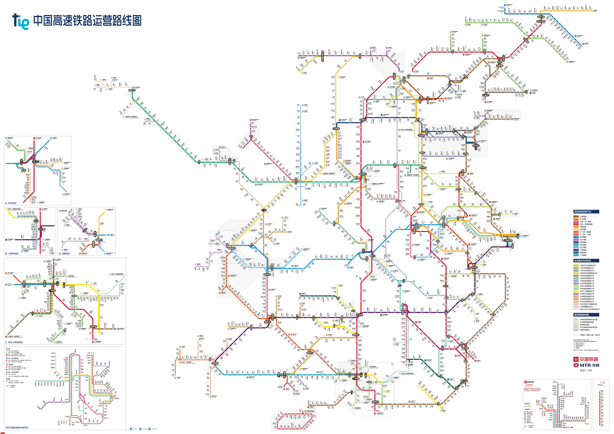
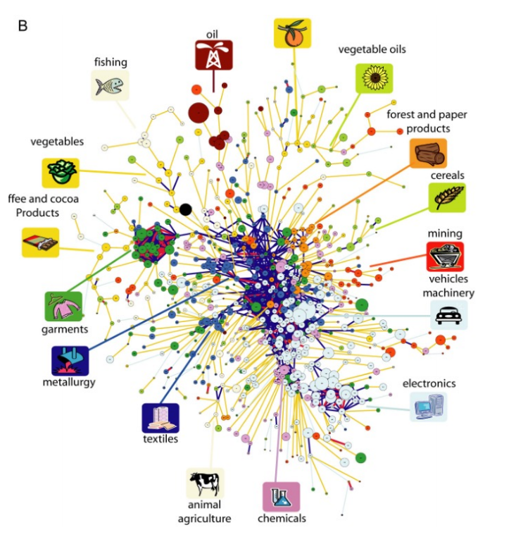

The revitalization of northeast China
近期，哈尔滨最新公布的人口数据显示，2021年末全市常住人口988.5万人，上一年为1000.1万人，正式跌破1000万，东北再无千万以上人口的城市。作为共和国长子，东北的经济社会发展现状无不令人哀叹。
我国曾于2003年提出过《关于实施东北地区等老工业基地振兴战略的若干意见》，“振兴东北”成为国家战略，但政策的导向似乎没有真正改变东北衰落的命运。
自从新华社1991年引发社会关注东北现象以来，东北地区的工业发展严重衰退、人口流失、农业衰退以及经济发展的断崖式下滑引发了中国社会长达30年的对“东北现象”或“东北问题”的帮助。
从总体看，东北现象的成因是区域性的产业发展低迷与地域衰退。我们希望通过人口普查、人口迁移、财政、企业构成、交通、土地等统计年鉴与定期调查的数据，综合反映出：自从东北振兴战略提出以来，现在的东北怎么样？面临怎样的问题？未来又将何去何从？
（注：受制于统计口径等原因，本文所指的东北地区特指东北三省，即黑龙江、吉林、辽宁三省，不包含内蒙古东部的市盟。）
作为新时代经济发展的重要基础设施，高铁的建设和运营尤为重要，从2021年的中国高铁运营路线图来看， 东北地区的高铁建设并不具备显著优势。主要体现在两个方面，其一为高铁的建设密度，东北高铁以京哈客运专线为干线，下设秦沈、津秦、哈大、盘营、京沈五条客运专线。 从图中可以看出东北地区高铁密度相较于东部地区乃至西南部也并无优势。 其二是距离高铁网腹地的距离较远，从整幅图可以看出，东北地区的高铁处于边缘分支地带。我国的高铁建设整体遵循“四横四纵”的规划，这意味着，越是处于中心的地区高铁红利约明显，而东北地区距离路网中心较为遥远，受到经济辐射的程度也更低。

目前，这一困境正在改善。通我国目前已经出台了多项政策，推进东北地区的铁路发展。未来五年内，东北地区将新增10条高铁路线，助力地区与地区之间原材料、产品、人口流动屏障的消除。
通过对5075家国内A股上市企业的统计。我们发现，东三省的上市企业数量仅占据全国的4%，与东北地区占全国GDP的比重相似（约5%），透过对上市企业的观察我们可以直接看出东北地区经济发展的问题。
据调查发现，东北企业发展面临多重困难。东北企业上市遇到的阻碍不止单纯体现在上市难，更体现在市场环境不包容方面。在新华网2017年的采访中，一位券商人员说到“感觉现在东北上市公司都快成为绩差股、造假股的代名词，很多研究员都不愿前往东北的上市公司进行调研。当然这也与东北上市公司缺少亮点，很多上市公司比较保守、不愿与调研机构进行深入沟通有一定关系。”
辽宁省社科院副院长梁启东认为，今年是改革开放40周年，很多东北企业虽然已经上市，但是并没有真正经历过商品经济、市场经济的洗礼，对真正的市场规则、市场运作程序仍然不熟悉，日常经营中也缺乏内部监管和规范，所以才会出现这样或那样的问题。
吉林大学经济学院副教授丁肇勇认为，东北的一些企业之所以不断曝出负面新闻，情况比较复杂。例如已经退市的吉恩镍业，所面临的就是典型的东北传统制造企业转型升级的问题，而东北特钢、大连机床等债券违约企业所面临的则是一直存在的机制、体制问题。
国资企业比重过大或民营企业比重过低也是造成东北经济活力逐步衰退的原因之一。我国的国营企业大多分布于能源、钢铁、矿产、国防等关乎国民经济的命脉产业，国有企业主要保证这些行业的稳定。但创收致富的任务则需要交给海量的民营企业，民企的发展在过去改革开放的40多年间已经成为事实上的中国经济增长引擎。而东北地区的国营与民营上市企业数量基本持平，缺乏类似长三角地区民营经济的传统也是在东北未来发展中难以避免的困境。隐藏在数据之下的另一问题是，近年来东北发展起来的民营经济多属于国有经济系统的“配套经济”,这直接导致国有企业萎靡时，私营企业也难以作为。
透过数据我们可以看到，东北地区上市的企业基本上国企民企各占一半，而同为老工业区的湖北四川则逐渐摆脱国企的“包袱”，上市民企数量大大超过了上市国企，成为地方经济增长的重要力量。
我们发现，东北问题的表征体现为人口的迁出、经济的低迷，但是东北的问题实际上由诸多结构性因素造成：商业跨省交通流动的阻断、公共预算收入与土地财政依赖、创新活力的流失，使得东北问题成为了难以处理的症结；另一方面，从上市企业数据与文本资料的调研中我们发现，不止东北地区国营企业的比重远大于其他地区，私营企业的独立性与创造力也难以得到保证。
高纬度地区的衰落的确在世界范围内普遍发生：美国东北部、中国东北、俄罗斯乌拉尔工业区、日本北九州、德国鲁尔区、法国洛林区、英国曼彻斯特地区等，都曾是一度辉煌，但又昙花一现的城市。东北的发展路径与他们接近。进入后工业化时代，资本密集型、技术密集型、智力密集型的产业必定会在经济中占据更大的权重，也意味着铁锈地带的区位优势不再存在；另一方面，我们也在先前提到，东北地区并没有形成充分自由的市场经济的观念环境。以上种种因素，综合塑造了东北困境。
东北现象兼具着内部的结构性因素和外部的宏观市场因素的驱使；另一方面，东北现象并非孤例，而是北半球经济重心南移后产生的“铁锈地带”的缩影。那么，逐渐衰落是否是东北的命运呢？
根据先前的数据分析，我们认为，打破东北现状的僵局需要在以下几个关键指标努力：①财政拨款比重的变化，提升科教文卫方面的投入，激活地方高校的创新活力，蓄积人才；②政策激励，鼓励私营企业落户东北，形成产业优势集群；③覆盖面更广的铁路，降低输送原材料与成品的工业成本。

另外，借鉴一些产业研究方面的前沿成果，我们可以从优势产业和区位条件思考东北未来的出路在何方。发表于《Science》上的文献The Product Space Conditions the Development of Nations通过对各个国家进出口产业数值的计算，运用RCA，计算得出产业与产业之间的网络关系；随后对产业发展轨迹作仿真预测，揭示Product space发展的规律。研究者发现：对于一个国家/地区，产业升级需要不断发展新产业，而新产业与已有的优势产业往往密切相关，这是一个循序渐进、无法跳跃的过程；另一方面，决定某个产业能否发展的因素是①数量（有多少优势产业与新发展的产业相关？）和②阈值（优势产业助力新发展产业的阻力有多大？）。
因此，对于东北的案例，我们认为需要从这两方面着手：
①提升数量。确定合适的发展目标，把新产业定为与已有产业密切相关的产业类型。东北的装备制造、汽车、种植业与石化产业较为发达，属于网络图中的Machinery（蓝色）、Petroleum（红色）和Raw material（橙色）、 Cereal（绿色）节点。我们认为，东北产业升级的未来潜力，在于与以上节点之间网络关系中平均路径最短的产业。
②降低阈值，降低优势产业带动新产业的阻力。尤其需要政策激励，扭转东北营商环境，并注重营商环境和私营企业包容程度的改善。当然，改变营商环境、促进原材料、资本与产品流动是一个系统性工程，不可能一蹴而就。一个市场机制有效、企业有活力、宏观调控有度的经济体制，将是东北走出低估，得以转型的另一重要保证。